library(corrplot)
library(ellmer)
library(gmodels)
library(matrixStats)
library(tidyverse)
set.seed(123)
# Location of the data files. Adjust this path if you keep the data
# files in a different directory.
DATA_DIR <- '../../data'Chapter 1: Exploratory Data Analysis
Exploratory Data Analysis
Data Dictionaries and Catalogs
system_prompt <- "
Improve the attached data dictionary and return it in YAML format. In addition to
the description of features, provide name, description, source, and
size of the dataset.
For each feature, provide the following information:
- feature name
- readable variable name (if required)
- definition of the variable
- data type
- measurement units
- allowed values (for categorical or nominal features, but only if you are sure)
"
data_dictionary <- "
name: ebay Auctions
description: >
The dataset eBayAuctions.csv contains information on 1972 auctions that
transacted on eBay.com during May-June 2004.
source: Copyright 2016 Galit Shmueli and Peter Bruce
size:
observations: 1972
features: 8
features:
Category: Category of the auctioned item
currency: \"US: US dollar, GBP: English pound, EUR: Euro\"
sellerRating: >
a rating by eBay, as a function of the number of \"good\" and \"bad\"
transactions the seller had on eBay
Duration: Number of days the auction lasted (set by seller at auction start)
endDay: Day of week that the auction closed
ClosePrice: Price item sold at (converted into USD)
OpenPrice: Initial price set by the seller (converted into USD)
Competitive?: whether the auction had a single bid (0) or more (1)
"
message <- paste(c(
"Here is the data dictionary in YAML format:",
data_dictionary,
"First ten lines of the dataset in CSV format:",
read_csv(file.path(DATA_DIR, "eBayAuctions.csv.gz"), show_col_types = FALSE) %>%
sample_n(10) %>%
format_delim(delim = ",", na = "")
), collapse = "\n")
chat <- chat_openai(system_prompt, model = "gpt-4o-mini")
response <- chat$chat(message)Here’s an improved data dictionary for the eBay Auctions dataset in YAML
format:
```yaml
name: eBay Auctions
description: >
The dataset eBayAuctions.csv contains information on 1972 auctions that
transacted on eBay.com during May-June 2004.
source:
author: "Galit Shmueli and Peter Bruce"
copyright: "Copyright 2016"
size:
observations: 1972
features: 8
features:
- feature_name: Category
readable_variable_name: Auction Category
definition: The category of the auctioned item.
data_type: categorical
measurement_units: None
allowed_values:
- Music/Movie/Game
- Coins/Stamps
- Automotive
- Health/Beauty
- Toys/Hobbies
- Collectibles
- feature_name: currency
readable_variable_name: Auction Currency
definition: The currency in which the auction prices are denominated.
data_type: categorical
measurement_units: None
allowed_values:
- US (US dollar)
- GBP (British pound)
- EUR (Euro)
- feature_name: sellerRating
readable_variable_name: Seller Rating
definition: A rating by eBay based on the number of good and bad
transactions the seller had.
data_type: integer
measurement_units: rating points
allowed_values: None
- feature_name: Duration
readable_variable_name: Auction Duration
definition: The number of days the auction lasted, set by the seller at
auction start.
data_type: integer
measurement_units: days
allowed_values: None
- feature_name: endDay
readable_variable_name: End Day of Auction
definition: The day of the week that the auction closed.
data_type: categorical
measurement_units: None
allowed_values:
- Mon
- Tue
- Wed
- Thu
- Fri
- Sat
- Sun
- feature_name: ClosePrice
readable_variable_name: Closing Price
definition: The price at which the item was sold, converted into USD.
data_type: float
measurement_units: USD
allowed_values: None
- feature_name: OpenPrice
readable_variable_name: Opening Price
definition: The initial price set by the seller, converted into USD.
data_type: float
measurement_units: USD
allowed_values: None
- feature_name: Competitive
readable_variable_name: Competitive Auction
definition: Indicates whether the auction had a single bid (0) or multiple
bids (1).
data_type: categorical
measurement_units: None
allowed_values:
- 0 (Single Bid)
- 1 (Multiple Bids)
```
This structure enhances readability and organization, ensuring that each
feature includes key descriptive information alongside its data type,
measurement units, and allowed values as appropriate.Estimates of Location
Example: Location Estimates of Population and Murder Rates
state <- read_csv(file.path(DATA_DIR, "state.csv"), show_col_types = FALSE)
population <- state[["Population"]]
mean(population)[1] 6162876mean(population, trim = 0.1)[1] 4783697median(population)[1] 4436370weighted.mean(state[["Murder.Rate"]], w = state[["Population"]])[1] 4.445834weightedMedian(state[["Murder.Rate"]], w = state[["Population"]])[1] 4.4Estimates of Variability
Example: Variability Estimates of State Population
sd(state[["Population"]])[1] 6848235IQR(state[["Population"]])[1] 4847308mad(state[["Population"]])[1] 3849870Exploring the Data Distribution
Percentiles and Boxplots
quantile(state[["Murder.Rate"]], p = c(0.05, 0.25, 0.5, 0.75, 0.95)) 5% 25% 50% 75% 95%
1.600 2.425 4.000 5.550 6.510 ggplot(state, aes(y = Population / 1000000)) +
geom_boxplot(staplewidth = 0.25) +
labs(y = "Population (millions)") +
scale_x_discrete(labels = NULL, breaks = NULL)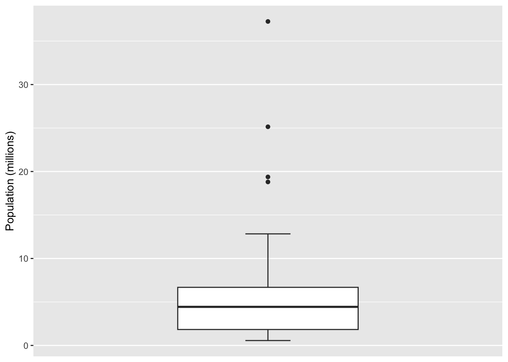
Frequency Tables and Histograms
breaks <- seq(
from = min(state[["Population"]]),
to = max(state[["Population"]]), length = 11)
state %>%
mutate(BinRange = cut(Population, breaks = breaks,
right = TRUE, include.lowest = TRUE)) %>%
count(BinRange, .drop = FALSE)# A tibble: 10 × 2
BinRange n
<fct> <int>
1 [5.64e+05,4.23e+06] 24
2 (4.23e+06,7.9e+06] 14
3 (7.9e+06,1.16e+07] 6
4 (1.16e+07,1.52e+07] 2
5 (1.52e+07,1.89e+07] 1
6 (1.89e+07,2.26e+07] 1
7 (2.26e+07,2.62e+07] 1
8 (2.62e+07,2.99e+07] 0
9 (2.99e+07,3.36e+07] 0
10 (3.36e+07,3.73e+07] 1ggplot(state, aes(x = Population)) +
geom_histogram(breaks = breaks, fill = "grey", color = "black") +
labs(y = "Frequency")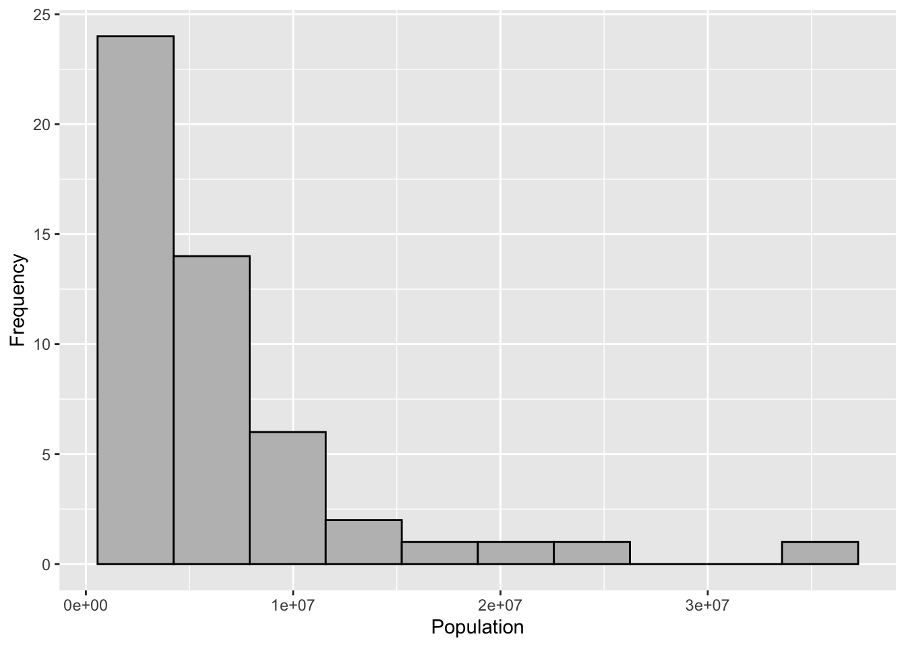
Density Plots and Estimates
ggplot(state, aes(x = Murder.Rate)) +
geom_histogram(aes(y = after_stat(density)), bins = 12, fill = "grey",
color = "black") +
geom_density() +
labs(x = "Murder Rate (per 100,000)", y = "Density")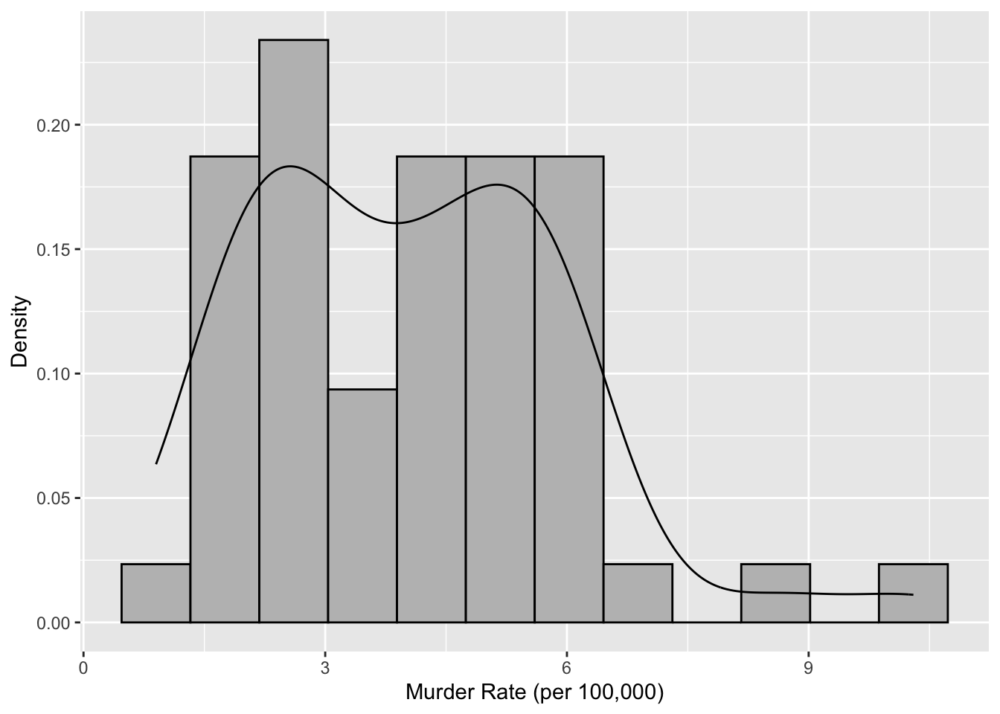
Exploring Binary and Categorical Data
dfw <- read_csv(file.path(DATA_DIR, "dfw_airline.csv"), show_col_types = FALSE) %>%
pivot_longer(everything())
ggplot(dfw, aes(x = name, y = value)) +
geom_col(color = "black", fill = "grey") +
labs(x = "Cause of delay", y = "Count")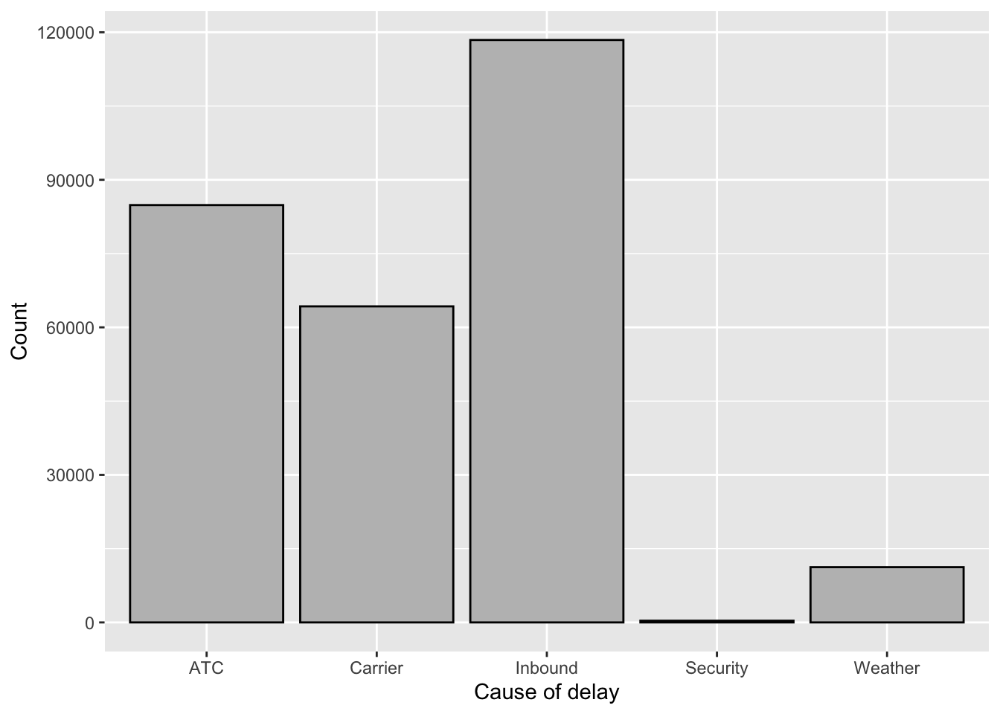
Correlation
sp500_px <- read_csv(file.path(DATA_DIR, "sp500_data.csv.gz"), show_col_types = FALSE)
sp500_sym <- read_csv(file.path(DATA_DIR, "sp500_sectors.csv"), show_col_types = FALSE)
etf_symbols <- sp500_sym %>%
filter(sector == "etf") %>%
pull(symbol)
etfs <- sp500_px %>%
filter(Date > "2012-07-01") %>%
select(all_of(etf_symbols))
corrplot(cor(etfs), method = "ellipse")
corrplot(cor(etfs), method = "ellipse")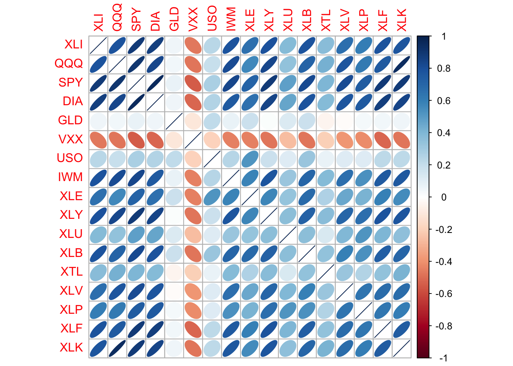
Scatterplots
ggplot(sp500_px %>% filter(Date > "2012-07-01"), aes(x = T, y = VZ)) +
geom_point(shape = 1) +
labs(x = "ATT (T)", y = "Verizon (VZ)")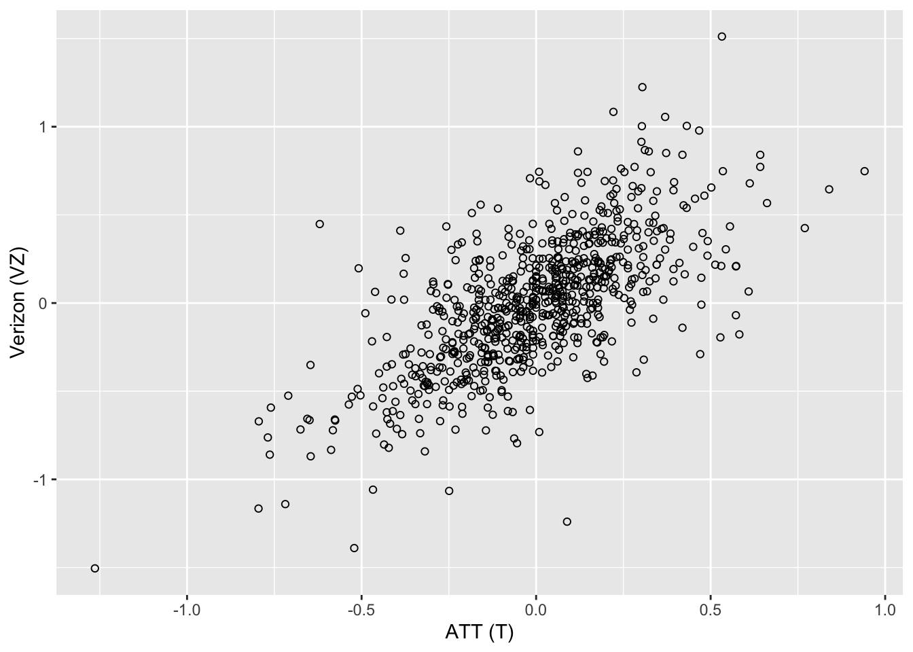
Exploring Two or More Variables
Hexagonal Binning and Contours pass:[<span class#“keep-together”>(Plotting Numeric-Versus-Numeric Data)]
kc_tax <- read_csv(file.path(DATA_DIR, "kc_tax.csv.gz"), show_col_types = FALSE)
kc_tax0 <- kc_tax %>%
filter(TaxAssessedValue < 750000,
SqFtTotLiving > 100,
SqFtTotLiving < 3500)
nrow(kc_tax0)[1] 432693ggplot(kc_tax0, (aes(x = SqFtTotLiving, y = TaxAssessedValue))) +
geom_hex(color = "white") +
scale_fill_gradient(low = "white", high = "black") +
labs(x = "Finished Square Feet", y = "Tax-Assessed Value")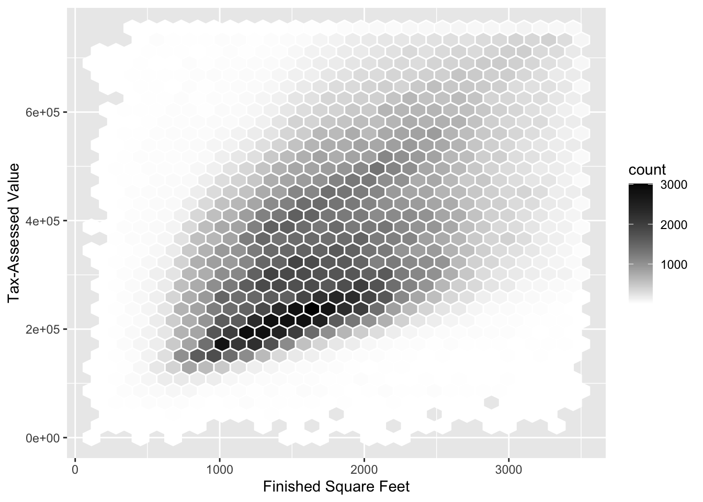
ggplot(kc_tax0, aes(SqFtTotLiving, TaxAssessedValue)) +
geom_point(shape = 1, alpha = 0.02) +
geom_density2d(color = "white") +
labs(x = "Finished Square Feet", y = "Tax-Assessed Value")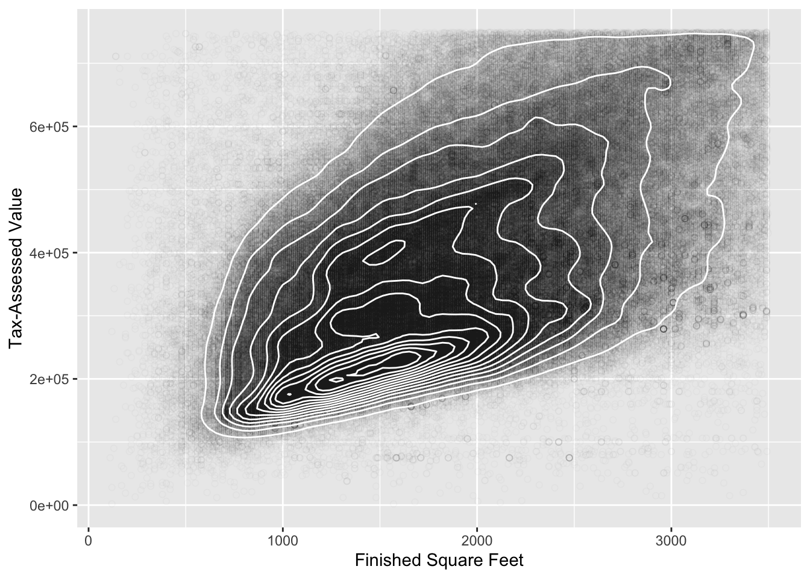
Two Categorical Variables
lc_loans <- read_csv(file.path(DATA_DIR, "lc_loans.csv"), show_col_types = FALSE)
x_tab <- CrossTable(lc_loans$grade, lc_loans$status,
prop.c = FALSE, prop.chisq = FALSE, prop.t = FALSE)
Cell Contents
|-------------------------|
| N |
| N / Row Total |
|-------------------------|
Total Observations in Table: 450961
| lc_loans$status
lc_loans$grade | Charged Off | Current | Fully Paid | Late | Row Total |
---------------|-------------|-------------|-------------|-------------|-------------|
A | 1562 | 50051 | 20408 | 469 | 72490 |
| 0.022 | 0.690 | 0.282 | 0.006 | 0.161 |
---------------|-------------|-------------|-------------|-------------|-------------|
B | 5302 | 93852 | 31160 | 2056 | 132370 |
| 0.040 | 0.709 | 0.235 | 0.016 | 0.294 |
---------------|-------------|-------------|-------------|-------------|-------------|
C | 6023 | 88928 | 23147 | 2777 | 120875 |
| 0.050 | 0.736 | 0.191 | 0.023 | 0.268 |
---------------|-------------|-------------|-------------|-------------|-------------|
D | 5007 | 53281 | 13681 | 2308 | 74277 |
| 0.067 | 0.717 | 0.184 | 0.031 | 0.165 |
---------------|-------------|-------------|-------------|-------------|-------------|
E | 2842 | 24639 | 5949 | 1374 | 34804 |
| 0.082 | 0.708 | 0.171 | 0.039 | 0.077 |
---------------|-------------|-------------|-------------|-------------|-------------|
F | 1526 | 8444 | 2328 | 606 | 12904 |
| 0.118 | 0.654 | 0.180 | 0.047 | 0.029 |
---------------|-------------|-------------|-------------|-------------|-------------|
G | 409 | 1990 | 643 | 199 | 3241 |
| 0.126 | 0.614 | 0.198 | 0.061 | 0.007 |
---------------|-------------|-------------|-------------|-------------|-------------|
Column Total | 22671 | 321185 | 97316 | 9789 | 450961 |
---------------|-------------|-------------|-------------|-------------|-------------|
# Alternative to create crosstable using tidyverse
crosstab <- lc_loans %>%
group_by(status, grade) %>%
count() %>% # adds column n with the size of each group
pivot_wider(id_cols = grade, names_from = status, values_from = n)
crosstab# A tibble: 7 × 5
# Groups: grade [7]
grade `Charged Off` Current `Fully Paid` Late
<chr> <int> <int> <int> <int>
1 A 1562 50051 20408 469
2 B 5302 93852 31160 2056
3 C 6023 88928 23147 2777
4 D 5007 53281 13681 2308
5 E 2842 24639 5949 1374
6 F 1526 8444 2328 606
7 G 409 1990 643 199Categorical and Numeric Data
airline_stats <- read_csv(file.path(DATA_DIR, "airline_stats.csv"), show_col_types = FALSE) %>%
mutate(
airline = factor(airline,
levels = c("Alaska", "American", "JetBlue", "Delta", "United",
"Southwest"))
) %>%
drop_na()
ggplot(airline_stats, aes(x = airline, y = pct_carrier_delay)) +
geom_boxplot() +
coord_cartesian(ylim = c(0, 50)) +
labs(x = "Airline", y = "Daily % of Delayed Flights")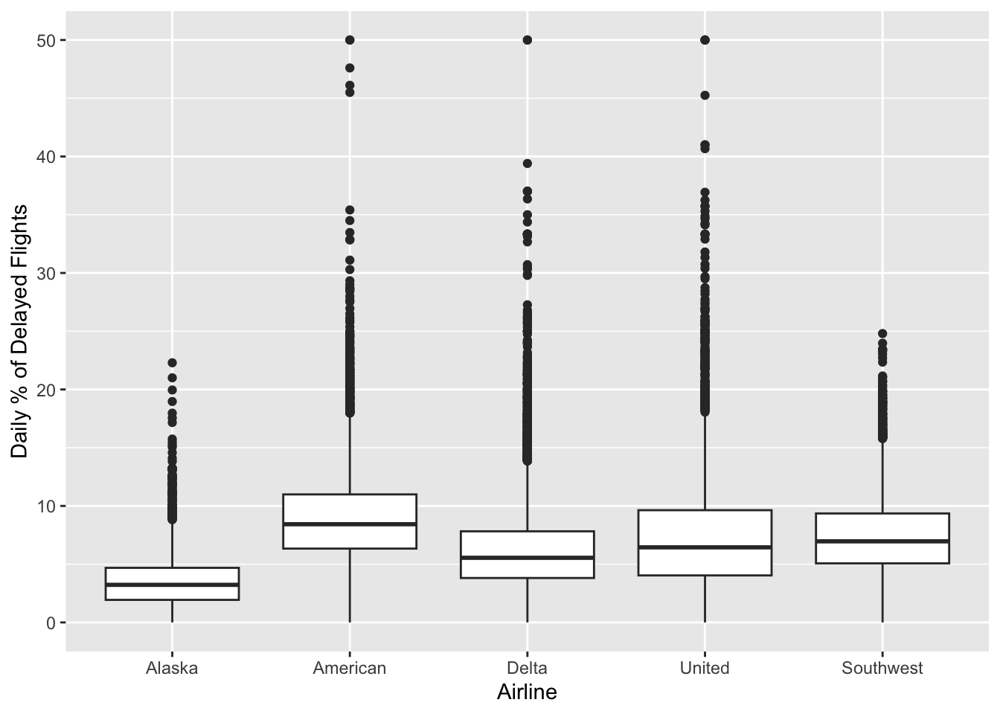
ggplot(data = airline_stats, aes(airline, pct_carrier_delay)) +
geom_violin() +
coord_cartesian(ylim = c(0, 50)) +
labs(x = "", y = "Daily % of Delayed Flights")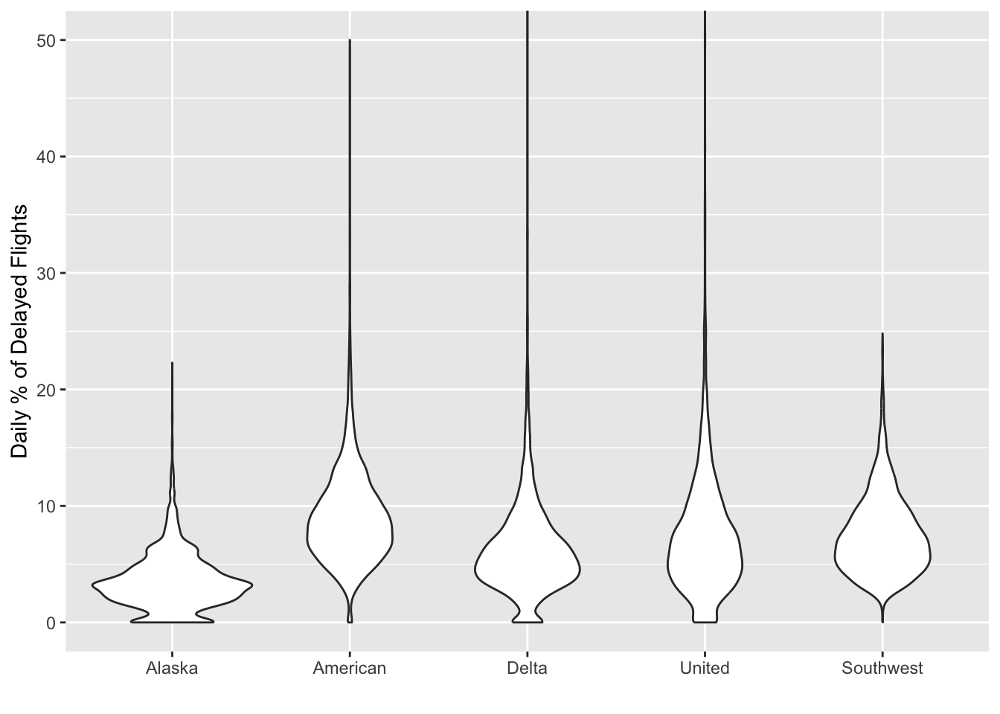
Visualizing Multiple Variables
kc_subset <- kc_tax0 %>%
filter(ZipCode %in% c(98188, 98105, 98108, 98126))
ggplot(kc_subset, aes(x = SqFtTotLiving, y = TaxAssessedValue)) +
geom_hex(color = "white") +
scale_fill_gradient(low = "white", high = "blue") +
labs(x = "Finished Square Feet", y = "Tax-Assessed Value") +
facet_wrap("ZipCode")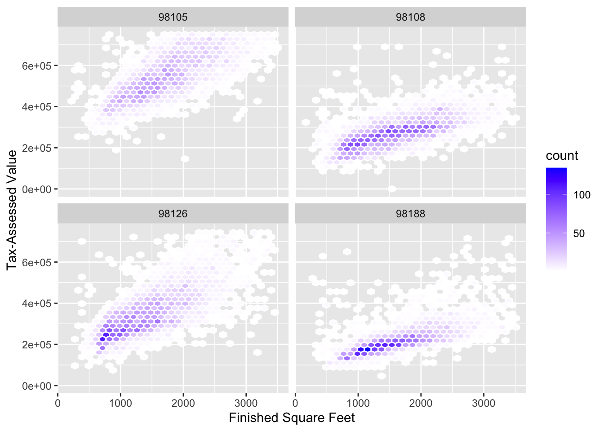
Supplementary Material
Table 1-2. A few rows of the data.frame state of population and murder rate by state
state %>%
mutate(
Population = formatC(Population, format = "d", digits = 0, big.mark = ","),
) %>%
head(8)# A tibble: 8 × 4
State Population Murder.Rate Abbreviation
<chr> <chr> <dbl> <chr>
1 Alabama 4,779,736 5.7 AL
2 Alaska 710,231 5.6 AK
3 Arizona 6,392,017 4.7 AZ
4 Arkansas 2,915,918 5.6 AR
5 California 37,253,956 4.4 CA
6 Colorado 5,029,196 2.8 CO
7 Connecticut 3,574,097 2.4 CT
8 Delaware 897,934 5.8 DE Table 1-4. Percentiles of murder rate by state
Table 1-5. A frequency table of population by state
Table 1-6. Percentage of delays by cause at Dallas/Fort Worth Airport
Table 1-7. Correlation between telecommunication stock returns
Figure 1-6. Correlation between ETF returns (Python version)
Figure 1-6. Correlation between ETF returns using a heat map (R version)
sp500_px <- read_csv(file.path(DATA_DIR, "sp500_data.csv.gz"), show_col_types = FALSE)
sp500_sym <- read_csv(file.path(DATA_DIR, "sp500_sectors.csv"), show_col_types = FALSE)
etf_symbols <- sp500_sym %>%
filter(sector == "etf") %>%
pull(symbol)
etfs <- sp500_px %>%
filter(Date > "2012-07-01") %>%
select(all_of(etf_symbols))
correlation_matrix <- cor(etfs) %>%
as_tibble() %>%
mutate(Var1 = colnames(.)) %>%
pivot_longer(-Var1, names_to = "Var2", values_to = "value")
ggplot(correlation_matrix, aes(x = Var1, y = Var2)) +
geom_tile(aes(fill = value)) +
scale_fill_gradient2(limits = c(-1, 1))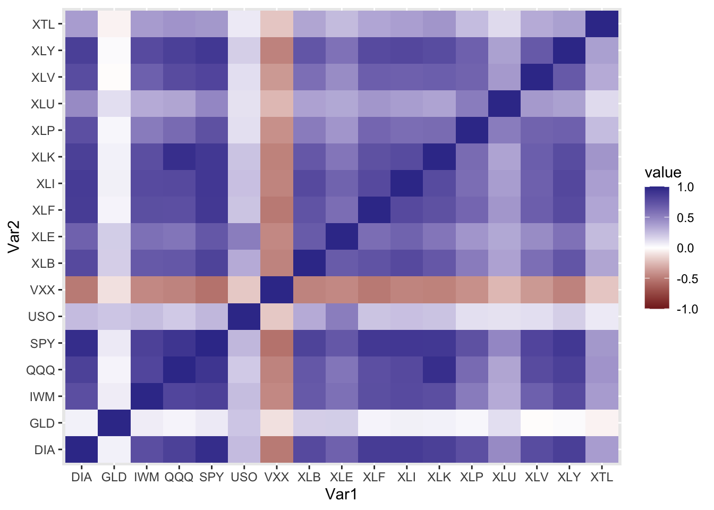